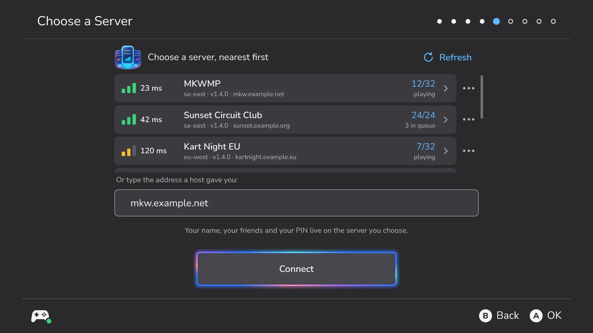
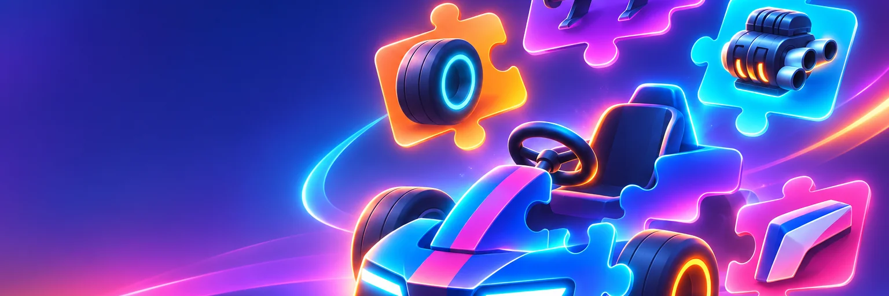
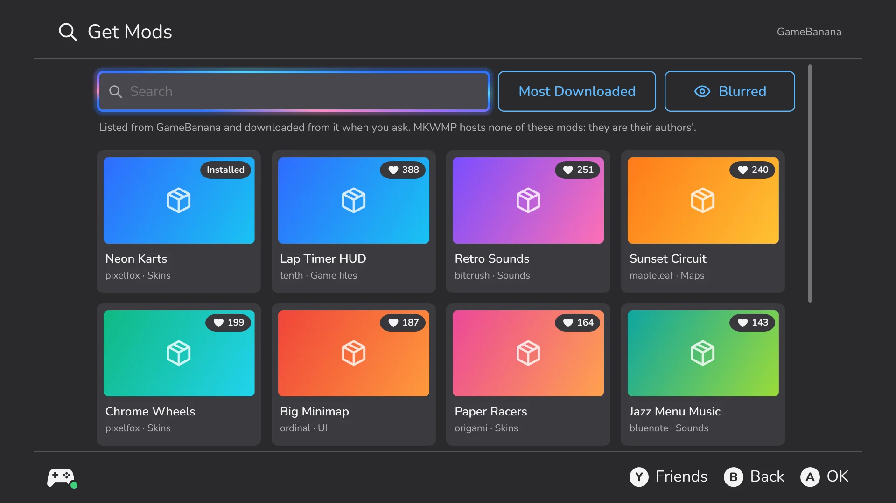
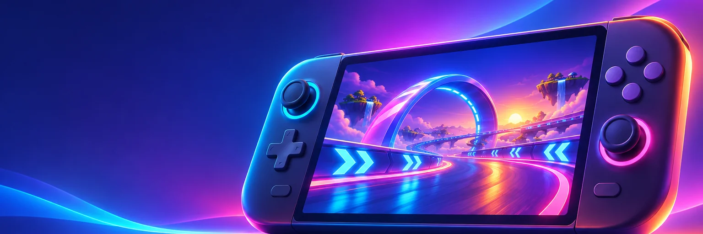
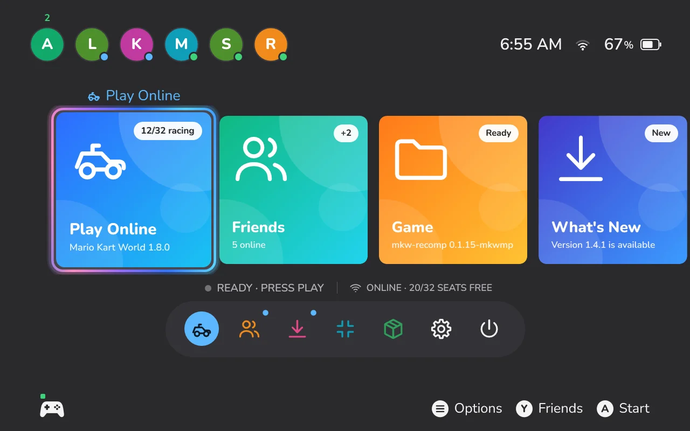

Race online. On your terms.
MKWMP is a launcher for mkw-recomp, the PC version of MKW built from your own copy of the game. It sets the game up for you, plays offline as soon as it's ready, and takes you online to community servers, with friends, voice chat and mods.
Latest v1.4.0Windows · Steam DeckFree and open source

Coming from 1.3?
1.4 is a new launcher (mkwmp.exe), and 1.3 can't update itself to it. Download 1.4 once, by hand, and unzip it into the same folder as your 1.3: it keeps your gamertag, PIN, server and choices. Then delete the old mkwmp-launcher.exe. On a Steam Deck, the command below does all of this.
Set up in one go
Point MKWMP at your own copy of the game, version 1.8.0, as a .nup, an .nx or a folder. It does the rest.

Offline first, online when you want
Once the game is set up, it's yours to play, with no account. Going online is one choice away: pick a server, register a gamertag, get a PIN.

Servers
Anyone can host a server. Public ones list themselves in the server directory, and the launcher shows them nearest first. This list is live.
Your browser can only time servers that use HTTPS; the launcher times every one. Lower is better: green under 80 ms, yellow under 160 ms.

Friends, voice and camera
Add friends by gamertag and see who's playing. Voice chat and the camera work only in private friend rooms, never with strangers in matchmaking.

The in-game overlay
In the game, press Guide (Home) or Select + Start. The game pauses and shrinks into the launcher's Home, with your friends, settings and Quit game right there.
The overlay needs mkw-recomp 0.1.16-mkwmp(.1) with the MKWMP mod: the launcher sets up both.

Mods

Browse GameBanana from the launcher, install with one button, and switch mods on and off.

15 languages, light and dark
The launcher follows your system's language and theme, or the ones you pick.

Steam Deck and SteamOS

One command in Desktop Mode (Konsole) installs MKWMP, adds it to Steam with artwork and the controller layout, and runs it under Proton.
bash -s --.
Host your own server

A small cloud VM, about US$5 a month, runs a server for dozens of players. One command installs it, opens the firewall and lists it in the server directory, so it shows up in everyone's launcher.
Privacy
Each server has its own privacy policy. The launcher shows it after you sign in, and the server records which version you accepted. When the policy changes, you're asked again.
Shown live from mkw.anarqz.dev/privacy. Other servers have their own.